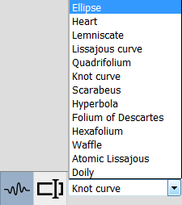

2D Space
There are two area dedicated to the 2D visualization. One is for the meridian, the other one is for the curve of revolution.
Meridian space

Curve of revolution space

Theses area are composed of 3 parts : The curve, The parameters, The type of curve
Curve

This area is used to display the 2D representation of the curve you want to use.
For the curve of revolution, the range are limited to -1, 1.
For the meridian, the range always start at 0. The maximum range is automatically computed based on the curve.
When the Hand Free Drawing mode is used (see Type of curve), it is possible to draw on this area.
Parameters

This area is used to display the parameters associated to the curve shown in the Curve area (see Curve).
By moving the sliders, it is possible to modify the corresponding parameter on the curve.
Type of curve
The application allows you to use three different kind of curves.
Predefined type
This type of curve is available for both, the meridians and the curves of revolution
-
Free hand type

This type of curve is only available for the meridian
It allows you to draw your own curve. By clicking at two different places on the canvas, the application will create a segment from those points.
By holding down the left mouse button, you'll be able to freely draw on the canvas.
You can clear the canvas by pressing the "Effacer" button.

It is also possible to close your curve by pressing the "Fermer la courbe" button.

Formula type

This type of curve is available for both, the meridian and the curves of revolution.
It allows you to type an equation for a curve to draw.
The meridian only accept equation of form F(x)= x.
The curve of revolution only accept of type F(x,y)= x + y.
3D Space

3D Visualization
Generation

There are two types of generation available.
Generation use (faster algorithm to model the surface using incremental algorithm).
Non optimized generation (slower algorithm testing every pixel).
Be aware that if your meridian is not connexe the faster algorithm may not generate all the voxels.
The resulting surface from the meridian applied to the curve of revolution is displayed on the 3D area.
There is a bounding box representing the limits of the space (the dimension) and a 3D landmark.

Interactions
There are multiple interactions possible with the 3D space.
Selection
When right-clicking on a voxel, the application will color the generatrix and the directrix.
The blue voxels are the one on the directrix of the surface.
The greend and red are on the generatrix.
A right-click outside of the surface will deselect the voxel.
Camera movements
By holding down the left mouse button, it is possible to rotate the camera around the surface.
By holding down the middle mouse button, it is possible to move the camera.
It is possible to reset the position of the camera to its initial position.
3d Space dimension

It is possible to modify the dimension of the 3D space.
Either by typing directly the values or by cliking the arrows. The maximum value for a dimension is 256.Connexity

There are three different type of connexity available : C26, C18, C6.
Voxel size

It is possible to modify the size of the voxels either by typing directly the values or by clicking the arrows.
The values must be between 0 and 1.-
Multislices

It is possible to slice the surface along an axis (X,Y or Z).
By moving the slider or typing a value in the corresponding field, the surface is sliced.
The Reset button replace the slider to their maximum range.
To validate the modifications, press enter in a field modified or click on the validate button.

Menus

The application offers multiple menus actions.
File menu
It is possible to save or load the current curves
Saving
The current generatrix/directrix can be saved to an XML format. The application will then propose to download the corresponding XML file.
Loading
To load a curve, the application will open a window asking which curve to load.
It is then possible to select a previously saved curve (xml format).
Be aware that it is not possible to load a directrix as a generatrix and vice versa.
Display
The application offer multiple options to modify the camera or the 3D space.
Perspective/Orthographic
By default, the camera is in perspective view.
Clicking on this item will switch the view between perspective and orthographic.


Color
By clicking on this item, the 3D view will switch between the normal view and a colored one.

Camera
The items are used to reset the position of the camera or center its point of view.
Center will replace the camera to its initial position.
Center the camera will position the camera so it looks to the center of the surface without modifying the zoom.
Center the camera is useful when the camera has been moved (with middle mouse button).
Hide/Show
These two items allows to hide/show the bounding box or the repere.
Curve
These menu items are linked to the tools of the corresponding panels.
See Type of curve for the details.
Surface

Generation
The generation options work the same way the 3D panel buttons work.
See Generation in Visualisation for more details.
Display slice
When a voxel is selected, the application will propose to truncate the structure along the axis.
See Selection in Interactions for more details about the selection.
X axis
The surface will be sliced so the red generatrix can be seen

Y axis
The surface will be sliced so the green generatrix can be seen

Z axis
The surface will be sliced so the blue directrix can be seen

Deselect slices
it is possible to Deselect the slices by clicking on the item from the menu.
Export
PNG
Theses options allows to export the generatrix, the directrix, or the surface to PNG.
On click, the application will propose to download the file.
3D Format
The application propose to export the surface to different 3D formats.
x3d
The application propose to export to the x3d format so it can be open by most of the 3d modeller.
As it render each voxels, the modellers struggle to open the file (it might take a lot of time).stl
The application propose to export the surface to stl format so that it can be 3D printed.
EN/FR translation
The application is translated in English and French.
It is possible to switch to a language by clicking on it.